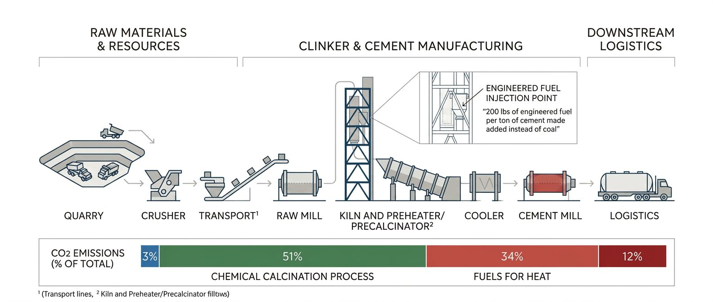
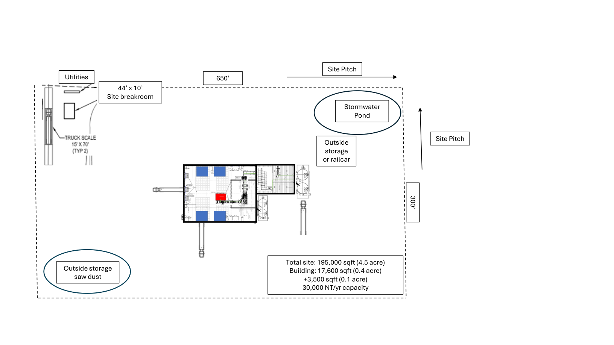
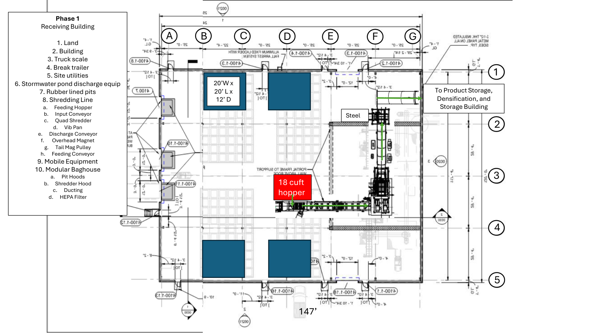
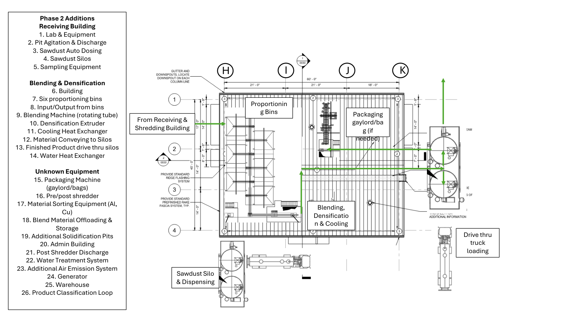
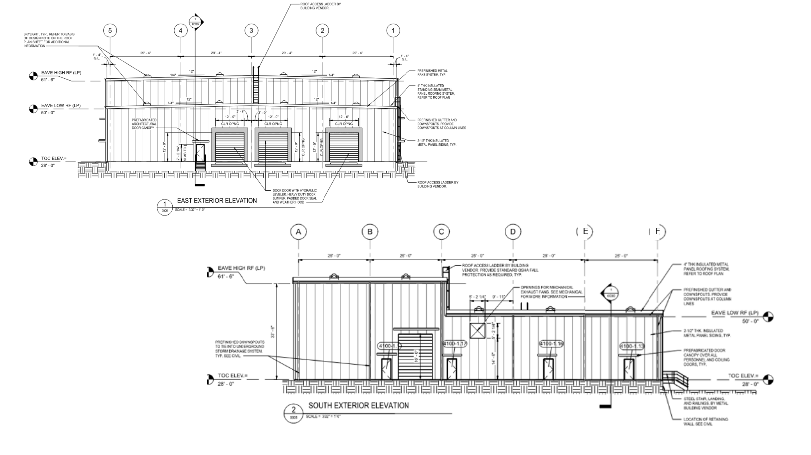

Receiving & Shredding
- Feeding Hopper
- Input Conveyor
- Quad Shredder
- Vib Pan
- Discharge Conveyor
- Overhead Magnet
- Tail Mag Pulley
- Feeding Conveyor
Technology
200 lbs of engineered fuel per ton of cement made added instead of coal.
Clinker & Cement Manufacturing
200 lbs of engineered fuel per ton of cement made added instead of coal.

Technology
Site Pitch
sqft total site (4.5 acre)
sqft building (0.4 acre)
sqft (0.1 acre)




Get Started